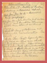
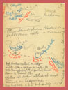
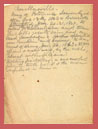
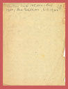
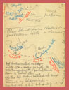
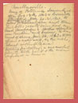
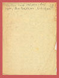

 

Chancellorsville
1862-Dec. 13 - Battle of Fredericksburg-Burnside's Defeat.
1863-Jan.Jan.20-21 - Burnside's Mud Campaign.
1863-Jan. 26 - Joe Hooker put in command over Franklin & Sumner- 85,000 men absent without leave-
April 18th - Army of Potomac at Falmouth recuperated. Lee opposite
Ap.30 - Chan. Campn began by cavalry raid on Lee's rear, which failed of results. Sidgwich Mode feint below Freds while Hooker stole to Lee's to Lee's flank & in 4 days massed 40,000 men of Chancellorsville--Lee divined his purpose Hooker [illegible] The terrain [map]
3rd Hooker called on Sidgwick-15 mi. away - for help. He took Marye's Heights & pushed towards Chan. to Salem Ch-
4th Lee left Hooker bottled up and turned on Sidgwick- Lee had but 2 to 5 but at all points had [illegible]
Chancellorsville-
Army of Potomac demoralized after Dec 13th 1862 = Burnside attempted Jan 20-21, 1863, to follow on McClellan's idea and turn Lee's Left; result rain and a mud campaign = Hooker appointed over Franklin and Sumner to command of army Jan. 26, 1863 = 85,000 officers & men were, by the rolls, absent without leave- "Fighting Joe" Hooker a succesful favorite took hold & the men confided in him-
Hooker had 125,000-lost 17,000; Lee had 58,000, lost 13,000
 Return to the Hotchkiss Family Collection
Return to the Hotchkiss Family Collection